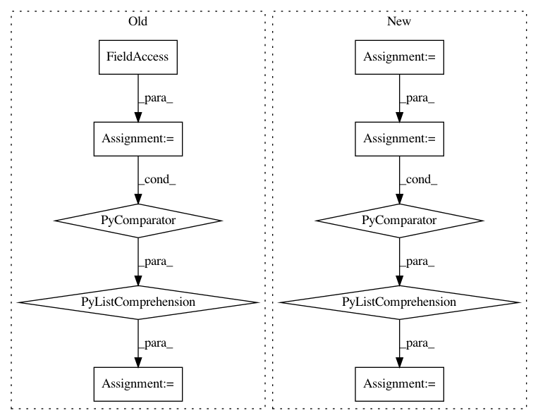

76b2432b1c1ee03c80895a5c7d49cde485323102,qucumber/nn_states/complex_wavefunction.py,ComplexWaveFunction,rotated_gradient,#ComplexWaveFunction#,163
Before Change
of the amplitude and phase RBMS
:rtype: list[torch.Tensor, torch.Tensor]
rotated_grad = [
torch.zeros(
2, getattr(self, net).num_pars, dtype=torch.double, device=self.device
)
for net in self.networks
]
Upsi, Upsi_v, v = unitaries.rotate_psi_inner_prod(
self, basis, sample, include_extras=True
)
After Change
self, basis, sample, include_extras=True
)
vr = v.reshape(-1, v.shape[-1])
raw_grads = [
self.am_grads(vr).reshape(2, *v.shape[:-1], -1),
self.ph_grads(vr).reshape(2, *v.shape[:-1], -1),
]
rotated_grad = [cplx.einsum("s...,s...g->...g", Upsi_v, g) for g in raw_grads]
grad = [
cplx.real(cplx.scalar_divide(rotated_grad[0], Upsi)),
cplx.real(cplx.scalar_divide(rotated_grad[1], Upsi)),
In pattern: SUPERPATTERN
Frequency: 3
Non-data size: 10
Instances
Project Name: PIQuIL/QuCumber
Commit Name: 76b2432b1c1ee03c80895a5c7d49cde485323102
Time: 2019-12-22
Author: emerali@users.noreply.github.com
File Name: qucumber/nn_states/complex_wavefunction.py
Class Name: ComplexWaveFunction
Method Name: rotated_gradient
Project Name: jazzband/django-debug-toolbar
Commit Name: e40b2c0fbdbd932be5f9d0550a16b6652de0d38d
Time: 2008-09-18
Author: rhudson@orcasinc.com
File Name: debug_toolbar/panels/template.py
Class Name: TemplateDebugPanel
Method Name: content
Project Name: commonsense/conceptnet5
Commit Name: 952f26f1f16ac30315f799e163106a688fc05cb7
Time: 2018-05-14
Author: joanna.teresa.duda@gmail.com
File Name: conceptnet5/vectors/transforms.py
Class Name:
Method Name: choose_small_vocabulary